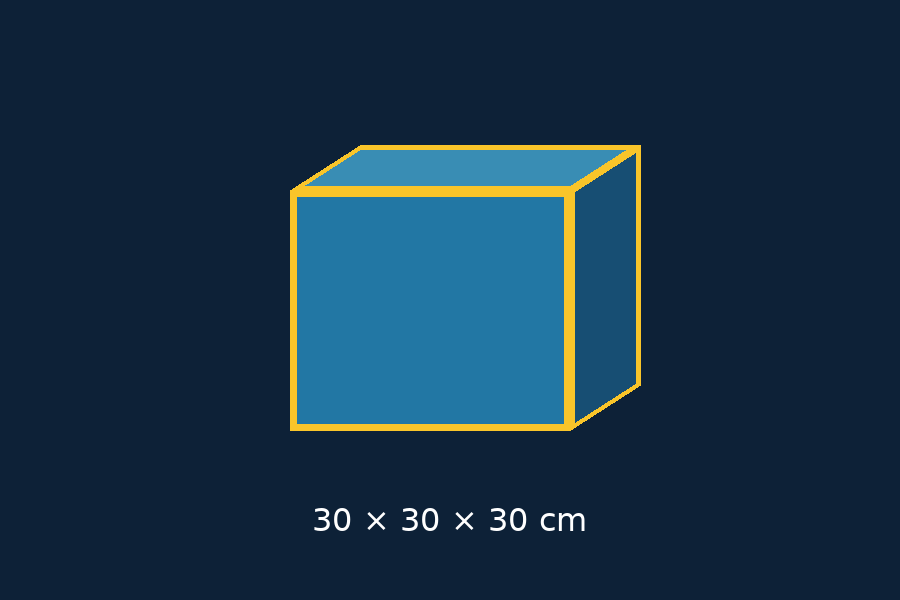
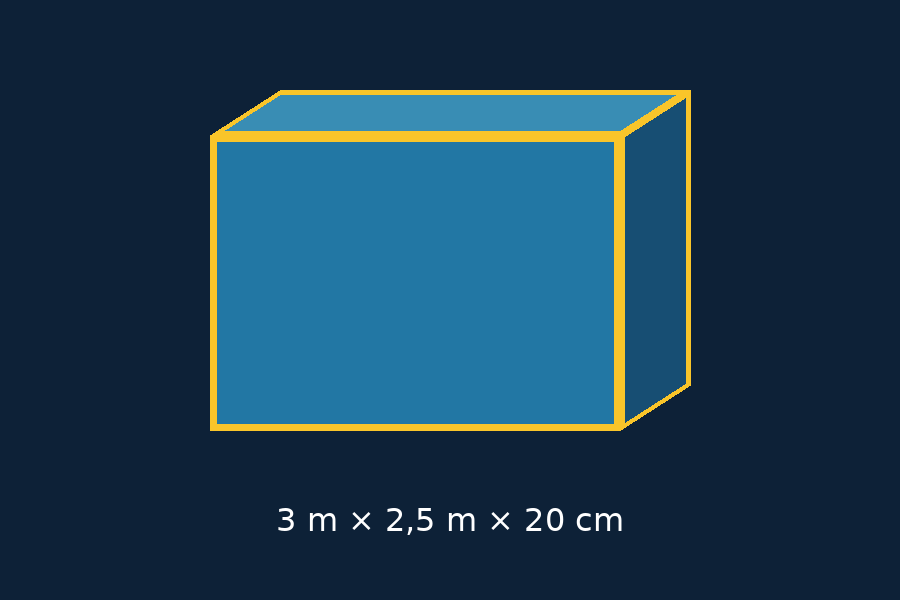

1 · Vérifier l’échelle
Cube de 30 cm de côté.

Voir le cube chez moiSur iPhone ou iPad, ouvrez cette page dans Safari. Aucun repère à imprimer pour cet essai.
Cube de 30 cm de côté.

Voir le cube chez moiLongueur 3 m · hauteur 2,5 m · épaisseur 20 cm.

Placer le mur en taille réellePlacement manuel pour ce premier essai. Le calage automatique sur la plaque n’est pas encore intégré. Pour le mur, choisissez un sol dégagé.